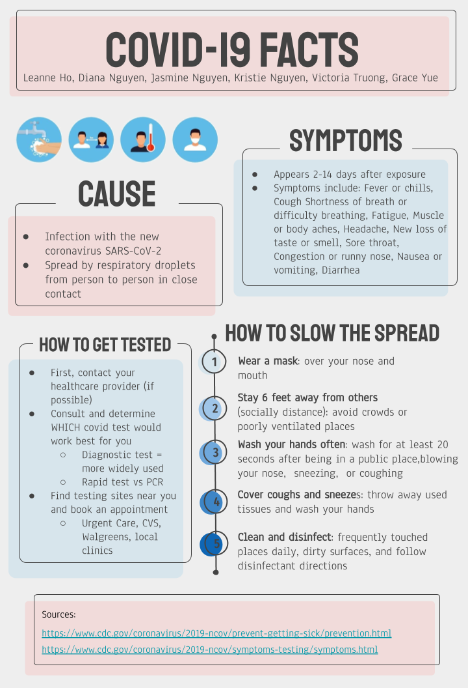

Our Story.
When the novel Coronavirus pandemic broke out last year, Oxford Academy HOSA launched the Coronavirus Awareness Project (CAP) and hosted a donation drive for hand sanitizer and tissue boxes to supply all our classrooms. This year, Oxford Academy HOSA, HGA, NAMI, and ACS have partnered to relaunch CAP.
CAP 2.0 serves to remind the general public of the importance of public health precautions, being empathetic to high-risk patients and frontline workers, and staying cognizant of others’ and their own mental health while dealing with possible stress and other difficult issues caused by the pandemic. Each small action we take is significant in flattening the curve and helping to keep our community safe.
See Contributors
Our Video Series.
About CAP 2.0
Through an 8-part video series of investigative journalism, CAP 2.0 serves to advocate for behaviors that prevent the spread of infection, combat COVID-fatigue, and encourage vaccination to eventually attain herd immunity.
Trailer
Watch a sneak preview of the CAP 2.0 videos to come! Click here to see the full list of videos.
Infographics
COVID-19 Information
During the AUHSD Servathon on 01/18/2021, CAP 2.0 was launched. Members from Oxford Academy HOSA-Future Health Professionals, Health Guardians of America, American Cancer Society, and National Alliance on Mental Illness convened to create infographics on a range of COVID-19 related issues.
Δ Delta Simulation
Simulating the Change In COVID-19 Phases
The Delta simulation aims to compare different preventative measures taken during the COVID-19 pandemic, in the United States. Through case-randomization we can effectively demonstrate how efficient each course of action is in flattening the curve of the number of cases. Take a look at how the illness spreads from person to person and how each additional layer of prevention decreases the number of cases in the same amount of time, as well as what you can do to safeguard your loved ones and help us in this fight against COVID-19.